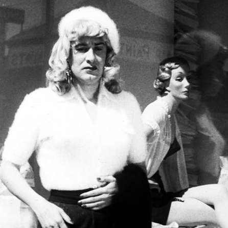

×

There coming to Get you Barbra!
The Day the Earh Stood Still was a short Sci-Fi story by author 'Harry Bates' in October 1940, In 1973 Marvel Comics adapted the story to make is series comic with Bates World Unknown. In 1951 Director 'Robert Wise' made it into a Horror Sci-Fi motion picture. In 2008 director 'Scott Derrickson' remade the movie. Robert Wise also made
Many other sitcoms and animation sitcoms has refference this movie. The Movie Army of Darkness famous scene line is based on this movie
Tarantula is a Horro-Sci-Fi motion picture from the Universal Pictures. Director 'Jack Arnold' who was a famous Actor/Director in the 1950's also made
Jack Arnold Go the idea for this movie based on "No Food for Thought" A teleplay, Science Fiction Theatre, May 17, 1955 by Robert M. Fresco that Jack Arnold directed.
Bride of Monster is bHorror Sci-fi low buddget motion picture. It was Produced, Written, and Directed by Edd D. Wood Jr. He was famous to be known as a Crossdresser for his time, and was Awarded Worst Director. Edd Wood had many films and his most famous one has been reffered to in many sitcoms and animation sitcoms
Night of the Living Ghouls is to be the sequal of Brid Of Monster. Unfortanatly Ed D Woods Jr never got that one to play theatrically or televised, he wasn't a live when it went striaght to video in 1984.